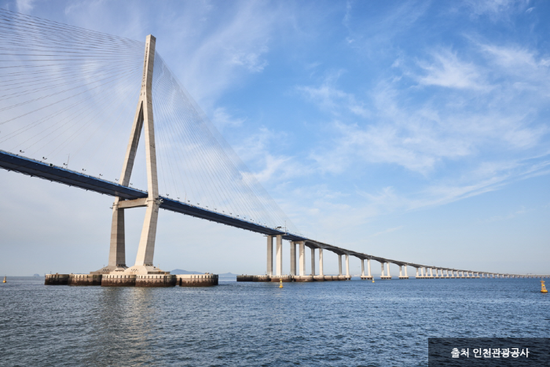

경기도 양평군 양서면에 있는 곳으로 흔히 '양수리' 라고 부른다.
운길산역과 양수역 사이의 작은 섬에 위치해 있다.
그리고, 과거에는 나루터가 있던 곳이기도 하다.
두물머리는 북한강과 남한강이 서로 만나는 곳으로 유명하며,
두물머리에서 북한강과 남한강이 서로 만나 서울을 가로지르는 한강으로 흐른다.
현대에는 양수대교와 신양수대교가 그 역할을 대신하여 나루터의 기능은 거의 잃어버렸지만,
지금도 유원지이자 관광명소로서 수많은 관광객들이 방문하고 있는 장소로 유명하다.
인천대교

인천광역시에 위치한 다리로, 연수구 송도국제도시와 인천국제공항의 소재지 중구 영종도를 잇는 다리이다.
대한민국 최장거리 교량으로 총 연장 21.38km이다.
울산대교처럼 대교를 지나갈 때 항을 드나드는 수많은 배들을 볼 수 있다.
이는 영종대교나 광안대교 등 지역명물로 유명한 다리들에서도 쉽게 볼수 없는 풍경이다.
바다 위를 떠다니는 수많은 배들을 아래로 내려다보며 지나가는 것도 이색적인 경험이다.
가시리 유채꽃 길
서귀포 가시리마을은 해마다 4월이면 진입로부터 10km구간에 펼쳐지는
유채꽃과 벚꽃이 어우러져 그림같은 드라이브 코스를 자랑하는 곳이다.
‘한국의 아름다운 길 100선’ 에 선정되기도 한 가시리 녹산로는
조선시대 최고의 목마장이던 녹산장과 갑마장을 관통하는 길로
현재 제주에서도 손꼽히는 경관을 자랑하는 유채꽃길로 가시리 마을 10경 중 제1경으로 꼽히는 곳이다.
또한 가시리 마을은 따라비 오름, 큰사슴이 오름 등 제주의 아름다운 자연경관도 함께 즐길 수 있다.